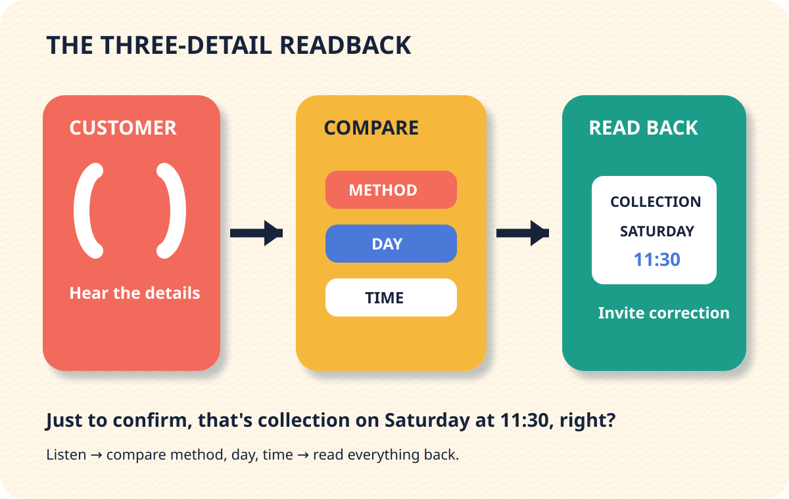

5-Minute English Lab
Collection or Delivery?
Confirm whether a customer order is for collection or delivery, then read back the day and time.

Decision
Which detail needs correction?
Decision
Which check is clear and useful?
Build
Build the final readback.
Tap blocks in order. Tap again to remove.
Transfer
Try a new order
A flower customer says: Please deliver the flowers on Tuesday between 2 and 3 p.m.
- It says delivery or deliver.
- It says Tuesday.
- It includes 2 to 3 p.m.
- It asks for confirmation.
Possible answer: Just to confirm, that's delivery on Tuesday between 2 and 3 p.m., right?
Review later
Tomorrow, recall the four parts: check phrase, method, day, and time.
Read the complete lesson
Situation
I'd like the cake for collection on Saturday at 11:30.
The order card says delivery, Saturday, 11:30. The method conflicts.
Model
Just to confirm, that's collection on Saturday at 11:30, right?
Grammar: Use that's plus a noun phrase to read back recorded details.
Meaning: The speaker checks that the recorded method, day, and time match the customer's words.
Appropriateness: Just to confirm signals a careful check. Right? invites correction without blaming the customer.
Transfer
A flower customer says: Please deliver the flowers on Tuesday between 2 and 3 p.m.
Write or say one readback. Confirm the method, day, and time window before opening the self-check.
Self-check
- It says delivery or deliver.
- It says Tuesday.
- It includes 2 to 3 p.m.
- It asks for confirmation.